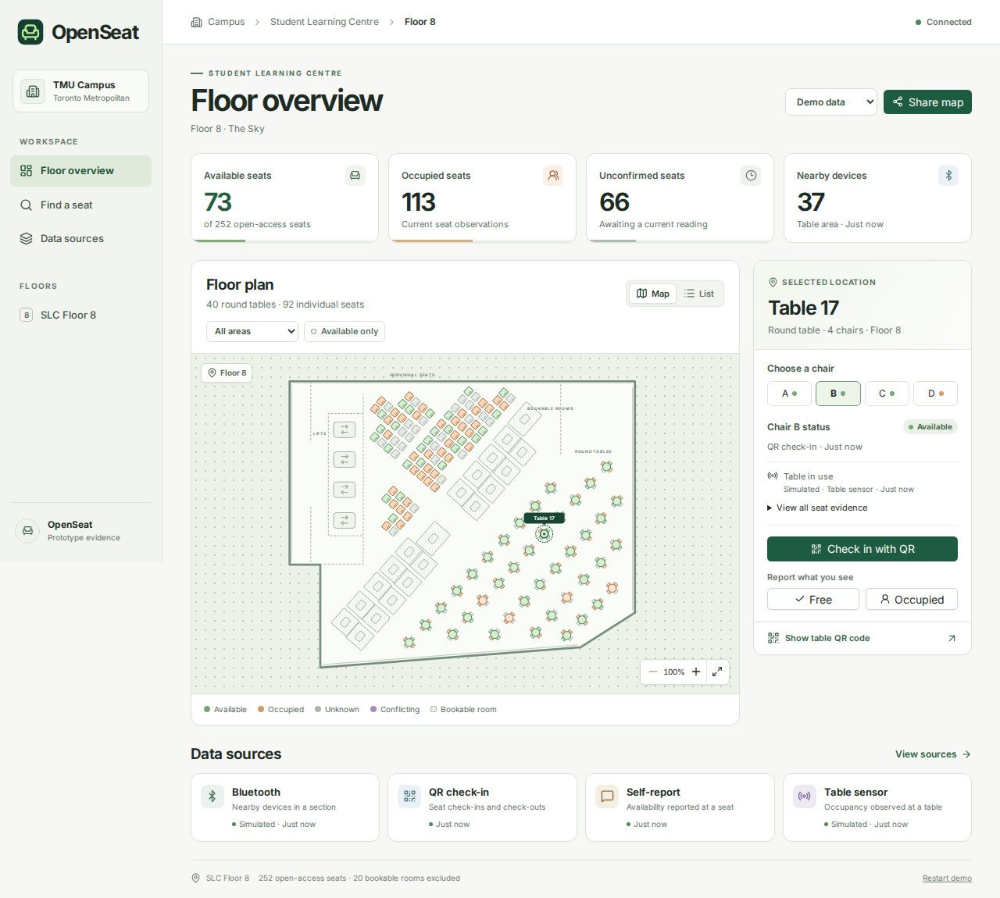
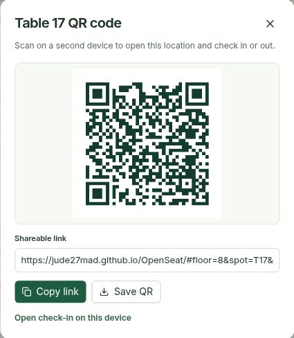

OpenSeat · CEN100 prototype record
This record documents the CEN100 Milestone 5 prototype, the design decisions behind it and the tests performed during development.
Concept and scope
A student should be able to choose an available study seat before walking to it. The midterm decision matrix selected the self-reported map. The revised concept keeps that map and combines four concurrent inputs. QR check-ins allow a student to identify a specific chair. Bluetooth adds a section-level count, and table sensors add observations when students do not report. Source labels and elapsed time address stale information without sending recurring reminders. This prototype covers one mapped floor and supports a solo demonstration on an iPhone and iPad.
Build plan and materials
| Step | Goal and materials | Date and evidence |
|---|---|---|
| 1. Establish scope | Trace the supplied floor drawing with 40 four-chair tables, 92 individual seats and 20 separate bookable rooms. | Nov 17 · traced layout below |
| 2. Establish Bluetooth rule | Use the existing BLE2MQTT calibration readings to set an inclusive −75 dBm cutoff for counting devices. | Nov 17 · recorded calibration below |
| 3. Build the map | Trace furniture positions, assign prototype IDs, add searchable seats, then attach observation scope, timestamps, conflict rules and expiry. | Nov 17 · dashboard image below |
| 4. Wire the four inputs | Connect shared storage, explicit QR check-in/out, one-tap free/occupied reports, a sensor receiver and local BLE scan reduction. | Nov 17 · table QR screen below |
| 5. Verify the student journey | Exercise the UI, shared service, QR code and state rules. Keep measured results separate from human or physical trials. | Nov 17 · verification table below |
The planned phone, iPad, floor drawing and BLE2MQTT scans were already available. The estimated and actual additional hardware cost was $0. A simulated input replaced physical table hardware for this build. GitHub Pages serves the dashboard and a managed database service shares observations across browsers.
Process evidence
Stage 1. The floor-plan component is shown on its own with every chair marked Unknown. The 40 four-chair tables and 92 individual seats follow the supplied drawing, for 252 open-access seats. Seat and table IDs are prototype assignments.

Stage 2. The integrated demo shows floor totals, area device count, selectable furniture, individual chairs, provenance and age. Live and demo sessions use different data. Each sample observation is explicitly labelled simulated.

Stage 3. A table QR carries the floor session and table. It opens an explicit check-in screen where one tester can choose a chair on a second device. The code and shared state were exercised with test sessions.

Calibration already completed
| Reading for the same reference device | Received power | Included at −75 dBm |
|---|---|---|
| First | −80 dBm | No |
| Second | −82 dBm | No |
| Third | −80 dBm | No |
| Fourth | −73 dBm | Yes |
| Fifth | −72 dBm | Yes |
These readings support a working threshold for the prototype. They were collected in the library and do not establish the number of people, exact seat positions or accuracy on SLC Floor 8. Several people can share a table, and one person can carry multiple devices.
Verification
The current release uses Firebase Realtime Database on the Spark plan. The migration preserved all 38 observations and their timestamps across 10 demo sessions. The release check opens the published dashboard in desktop Chromium and mobile WebKit, follows a generated table QR code, verifies that both browsers see the same chair updates, and opens this evidence page. It uses a new demo session for each run. View release checks and browser screenshots
| Criterion | Result | Evidence |
|---|---|---|
| All 252 open seats accounted for and 20 bookable rooms excluded | Pass | Automated inventory and total checks. An empty live data set produces 252 unknown seats. |
| Inclusive −75 dBm threshold, within-scan deduplication and historical replay handling | Pass | Automated model tests covered −76, −75 and stronger readings, repeated identifiers and expired measurements. |
| All four inputs persist in one session | Pass | The original Floot API returned QR, report, sensor and Bluetooth observations together. It rejected another browser’s checkout with HTTP 409 and accepted the original browser’s ticket. The Firebase rules tests also verify checkout ownership. |
| A check-in appears on a second screen within 10 seconds | Pass | During the original Floot-backed demo on the published site, the second browser showed Occupied 1.38 seconds after check-in. A free report showed Conflicting. After the original browser checked out, the chair showed Available. The two browsers used independent storage. |
| A phone-sized browser can use the generated table QR and read the map without horizontal scrolling | Pass | In the original Floot-backed build, GitHub Actions decoded the QR image, checked a chair in using mobile WebKit and saw it update in desktop Chromium in 1.46 seconds. It also verified that the mobile page fit its viewport. Browser test run |
| Section and table signals do not create fake seat counts | Pass | A section count of 128 alongside an occupied table sensor left all 252 chairs unknown without chair-level reports. A separate free chair remained available at a table in use. |
| Recent disagreement is visible and expired evidence gives unknown | Pass | Automated model tests checked both sources for a conflict and retained the stale report’s source and age. |
| Solo student can choose a real open spot within 10 seconds before walking | Not measured | This requires a participant timing and an on-site observation of the chosen seat. |
| Installed table hardware and campus-wide count accuracy | Not measured | The receiver was implemented and simulated events were exercised. No installed sensor or campus occupancy ground truth was available for this build. |
Attribution
Student design work included the integration concept, the choice of Floor 8 and dashboard reference, the furniture inventory and map, and the Bluetooth calibration and cutoff.
AI-assisted development implemented the React prototype, shared service, QR codes, simulator and tests from those design decisions, and produced this build record and screenshots.